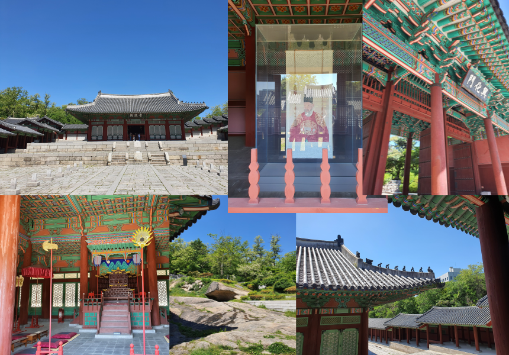

우리가 미처 알지 못 했던, 경희궁의 사실들
경희궁의 역사
인조의 아버지 정원군의 집이 있던 곳으로 광해군 때 왕궁을 지어 경덕궁이라 부르다 1760년에 경희궁으로 이름을 바꾸고, 280여 년 동안 동궐인 창덕궁, 창경궁과 더불어 서궐의 위치에서 양대 궁궐의 자리를 지켜왔다.
경희궁은 도성의 서쪽에 있다고 하여 서궐(西闕)이라고도 불렸는데, 이는 창덕궁과 창경궁을 합하여 동궐(東闕)이라고 불렀던 것과 대비되는 별칭이다. 임진왜란으로 경복궁이 불탄 후 대원군이 중건하기 전까지는 동궐인 창덕궁과 창경궁이 법궁이 되었고, 서궐인 이곳 경희궁이 이궁으로 사용되었다. 인조 이후 철종에 이르기까지 10대에 걸쳐 임금들이 이곳 경희궁을 이궁으로 사용하였는데, 특히 영조는 치세의 절반을 이곳에서 보냈다.
경희궁은 일제가 조선을 병합하면서 경복궁과 더불어 총독부 소유로 넘어갔다. 1907년 일제는 경희궁 안에 통감부 중학교를 세우면서 기존 건물들을 대부분 철거하였을 뿐만 아니라 지형도 높은 곳을 깎아 낮은 곳을 메우는 등 크게 변형시켰다. 이후 숭정전, 회상전, 흥정당, 흥화문, 황학정 등 얼마 되지 않은 건물들마저 다른 곳으로 팔려 가거나 이전되고, 또 경희궁 부지 2만 5천여 평을 떼어내어 전매국 관시를 지음에 따라 경희궁은 사람들의 기억 속에서 사라지게 되었다. 다만 했을 때 이곳에 경희궁이라는 궁궐이 있었다는 의미인 '경희궁 터'로 인식되었을 뿐이다.
1980년 9월 경희궁 터가 사적 제 271호로 지정된 이후, 1985년 6월 건설부 고시 제258호로 공원 지정이 되었고, 서울시립박물관 · 미술관을 이곳에 짓기로 함에 따라 서울시에서는 1986년 현대건설로부터 경희궁 터를 교환 방식으로 취득하였다. 그리고 경희궁 복원 및 박물관 · 미술관 건립 공사에 앞서 여러 차례에 걸쳐 경희궁 터의 유구 발굴 조사를 시행하여 복원 가능한 건물과 박물관의 위치를 결정하게 되었다.
[출처 : 서울역사박물관 공식홈페이지]
서울특별시 유형문화재 제19호 경희궁 흥화문 (慶熙宮 興化)
조선 광해군 8년(1616)에 세운 경희궁의 정문이다.
그러나 일제가 경성중학교를 건립하고자 궁내의 많은 전각을 헐면서 그 기능을 상실했다. 그 후 일제는 1932년 남산 자락에 이등박문(伊藤博文)을 위한 사당인 박문사(博文寺)를 건립할 때 정문으로 사용하였다. 해방 후 박문사는 폐사되고 흥화문은 영빈관(迎賓館) 및 신라 호텔의 정문으로 사용되기도 했다.
1988년 서울시는 경희궁 복원 계획의 목적으로 흥화문을 지금의 자리로 이전(移轉) 복원하였다. 그러나 원자라는 동향을 보고 배치했다고 하나, 그 위치는 현재 찾기 힘들다. 정면 3칸, 측면 2칸의 우진각 지붕의 다포 양식 건물로, 정전인 숭정전, 황학정과 더불어 건축적 성격을 이해하는데 중요한 자료이다.
[출처 : 문화재청 국가문화유산포털]
서울특별시 유형문화재 제20호 경희궁 숭정전 (慶熙宮 崇政殿)
경희궁은 조선 광해군 9년(1617)부터 12년(1620) 사이에 지어진 궁궐로 임금이 항상 머무르던 곳이 아니라 본궁을 떠나 잠시 머무르던 이궁이다.
광해군 10년(1618)에 지어진 숭정전은 경희궁의 정전으로, 임금이 신하들의 조례를 받고 공식적인 행사를 하던 곳이다. 그러나 1910년 일본인들에 의해 강제로 철거되어 1926년 조계사로 옮겨 세워졌다가 현재는 동국대학교 안의 정각원이라는 법당으로 쓰이고 있는데, 내부가 불교 의례를 행하기에 알맞게 변형되어 있다.
서울시에서는 1985년부터 5차례의 발굴 조사를 시행했고, 그 결과를 토대로 숭정전을 6년에 걸쳐 복원했다. 경희궁 숭정전은 창경궁 명정전과 함께 조선 중기 궁궐건축 연구에 중요한 자료가 되고 있다.
[출처 : 문화재청 국가문화유산포털]